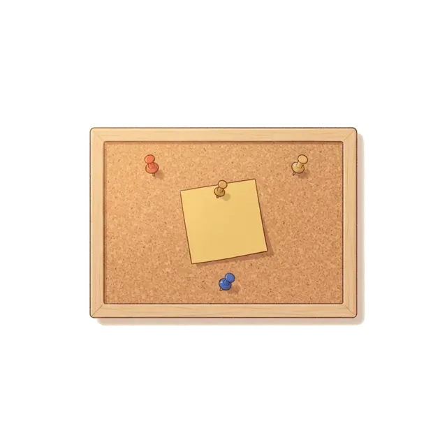

きょうのおすすめ
ワンタップ・ジャンプ
タップでジャンプして、赤いブロックをよけ続けるランゲーム。
ランゲーム ・ PC・スマホ ・ 1〜3分
作者が確かめたいことジャンプの手触りは、気持ちよかった？
きょうのおすすめ
タップでジャンプして、赤いブロックをよけ続けるランゲーム。
ランゲーム ・ PC・スマホ ・ 1〜3分
きょうのおすすめ
動くつみきをタイミングよく落として、高く積んでいくゲーム。
タイミング ・ PC・スマホ ・ 1〜3分

きょうのおすすめ
かごを左右に動かして★をひろい、赤い岩をよける45秒。
よけゲー ・ PC・スマホ ・ 1〜3分
きょうのおすすめ
文化祭の朝、バグを見つけたゲーム部員になって選ぶ、短いお話。エンドは3つ。
ノベル ・ PC・スマホ ・ 1〜3分
 30秒
1〜3分
30秒
1〜3分

この条件の作品はありません。条件を外して、ほかの作品を見てみよう。